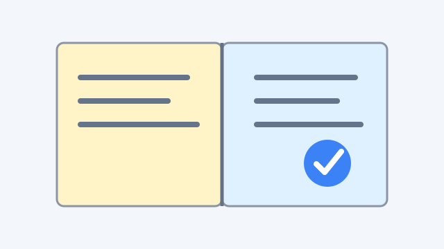
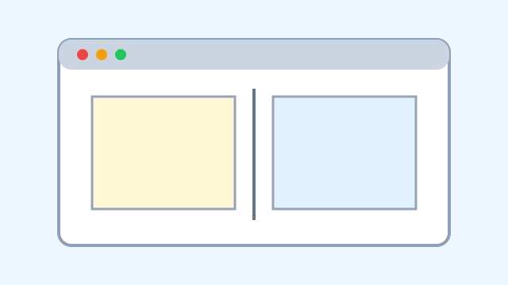
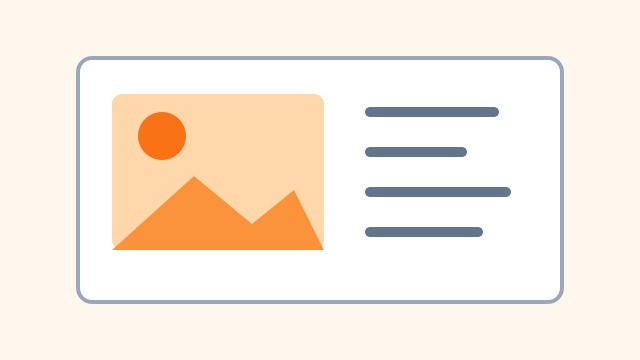
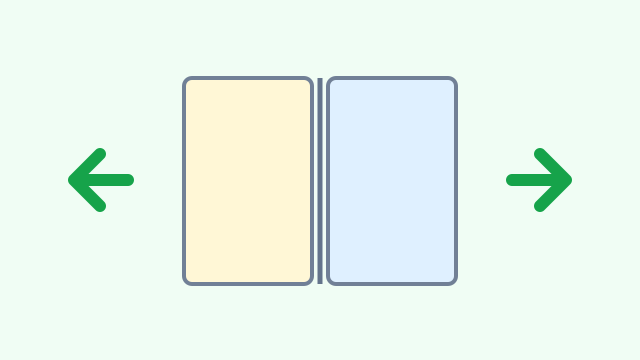
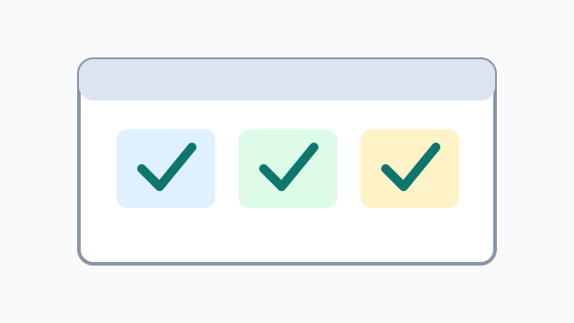
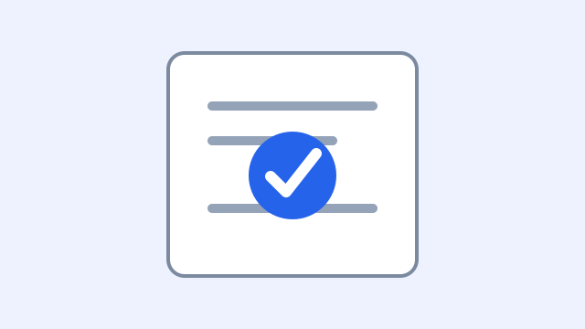

Explorer turn.js

Un exemple autonome pour verifier rapidement le chargement de jQuery 4, l'initialisation du plugin et le changement de page.

Un exemple autonome pour verifier rapidement le chargement de jQuery 4, l'initialisation du plugin et le changement de page.
Chaque page est un simple element HTML. Le plugin ajoute les wrappers, gere les vues et anime le passage d'une page a l'autre.


La demo contient du texte et des images locales afin de tester un rendu un peu plus proche d'un cas reel.
Utilise les boutons, les fleches du clavier ou le coin de page pour changer de vue.


Cette page charge jQuery 4.0.0 depuis le CDN officiel et la version locale de turn.js depuis le depot clone.
Si cette derniere page s'affiche et que le retour fonctionne, le scenario minimal est operationnel.
